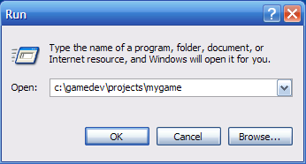
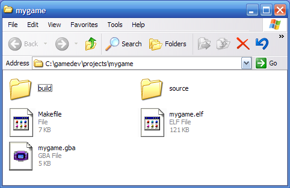
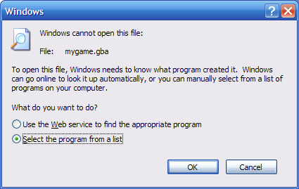
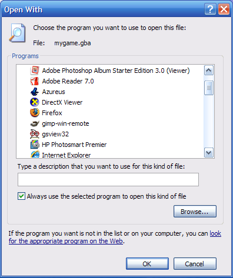
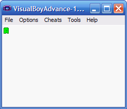

Running a GBA ROM File in VisualBoy Advance
After you've created a ROM file from your project, you can now run your ROM in VisualBoy Advance.
Step 1 : Find your GBA ROM
Use the "Run" command (as described in Building a GBA ROM file ), and enter the path to your project:
c:\gamedev\projects\mygame

This will open up a window that shows the files in your project directory.
If you just built your project in the previous tutorial ( Creating a simple sprite ), your project directory should look like the one shown here.

Find the mygame.gba file icon and double-click it.
Step 2 : Associate .gba files with VisualBoyAdvance
The very first time you double-click on the .gba file, Windows will complain that it does not know how to open a file of that type.

Choose "Select the program from a list" and press "OK".
You'll be shown a long list of applications to choose from.

Unfortunately, VisualBoyAdvance is not listed there, so you'll need to press the "Browse..." button and find it.
If you followed the Getting setup on Windows tutorial, the VisualBoyAdvance.exe file is located in the:
c:\gamedev\VisualBoyAdvance-1.7.2
directory.
After you select VisualBoyAdvance, press "OK" on the "Open With" dialog.
VisualBoyAdvance will run and launch the ROM file that you created.

You can use the arrow keys on your computer to move the sprite around the screen.
Finished!
The next time you double-click on a .gba file, you won't have to go through the steps of selecting an application — VisualBoyAdvance will launch directly.